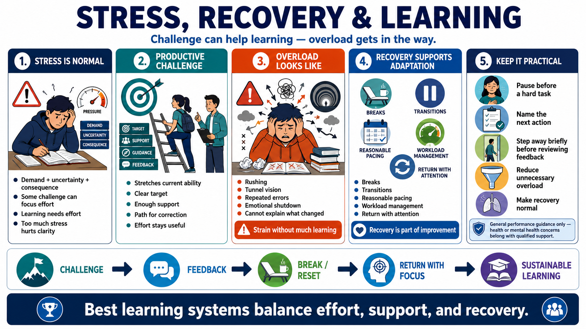

Stress, Challenge, and Recovery
Connecting to LMS... Progress: in progress

Narration
Stress is a normal response to demand, uncertainty, and consequence. In learning, some challenge can focus effort and reveal what needs improvement. But challenge becomes less productive when it turns into overload. If the learner is too overwhelmed to notice feedback, think clearly, or correct errors, the practice session may create strain without much learning.
Productive challenge stretches current ability without overwhelming the learner. It has a clear target, enough support, and a path for correction. Overload often looks different: rushing, tunnel vision, repeated errors, emotional shutdown, or inability to explain what changed. Good practice design adjusts the difficulty so effort remains useful.
Recovery is part of adaptation. Breaks, transitions, pacing, and reasonable workload management help learners return with enough attention to practice again. This is not only about comfort. Sustainable improvement depends on balancing effort, rest, and system repair. Training that treats recovery as weakness may produce short bursts of intensity but poorer long-term consistency.
This course stays non-clinical. Practical emotional regulation might include pausing before a difficult task, naming the next action, or stepping away briefly before reviewing feedback. Health, safety, or mental health concerns should be handled with qualified support. The responsible message is that learning systems should reduce unnecessary overload and make recovery a normal part of sustained performance.